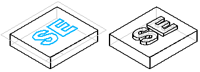
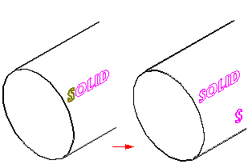
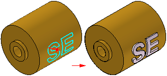

Creating features with text
In ordered modeling, when placing text on a flat surface, you can place the text profile while in the Profile step for a protrusion or cutout feature.
In synchronous modeling, when placing text on a flat surface, you can place the text profile as a sketch before constructing the feature.

When placing the text onto a curved surface, you must place the text profile as a sketch, then project the text onto the surface using the Wrap Sketch command or the Project Curve command.

You can then create a protrusion or cutout using the projected curves with the Normal Protrusion or Normal Cutout commands.
